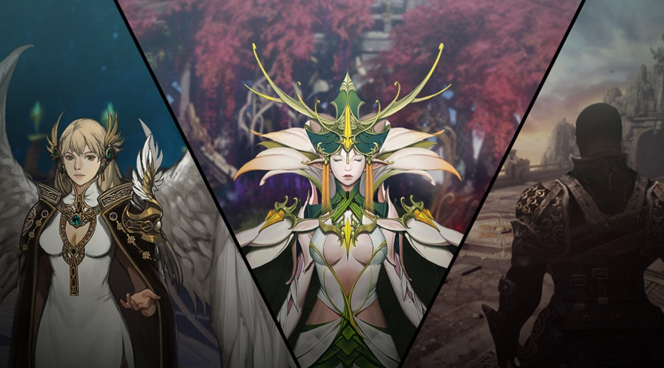

조화의 신 기에나가 생명의 원천인 바다를 창조한 이후, 하나의 대륙은 여러 개로 쪼개져 각기 다른 모습을 지니게 되었다. 루페온은 각 대륙에 자리잡은 아크라시아의 종족들을 위해 아크의 힘을 나누어 주었고, 종족들은 빠르게 발전해 나갔다. 그러나 아크의 힘으로 인해 아크라시아의 종족들은 교만해졌으며, 타락하여 신의 질서에 대항하기에 이른다. 이에 분노한 루페온은 종족들로부터 아크를 빼앗아 일곱 개의 조각으로 분리해 신들에게 나누어 주었다. 아크의 힘을 받은 신들은 각자의 방식으로 아크라시아를 풍요의 시대로 이끌었다.
루페온의 명을 받은 일곱 신들은 아크라시아에 새로운 종족들을 창조해내었다. 명예의 신 프로키온은 루페온과 가장 닮아 있는 종족 라제니스를 탄생시켰고, 지혜의 신 크라테르는 마법을 자유자재로 다루는 종족 실린을 만들었다. 또한 생명의 신 알데바란은 다양한 형태로 분화 가능한 정령들을, 대지의 신 아크투르스는 문명을 창조해 나갈 수 있는 능력을 지닌 우마르 종족과 거인족을 탄생시켰다. 불의 신 안타레스는 강력한 전투력과 지략을 지닌 할족을, 시리우스는 빙결의 종족 타베르를 만들었다. 조화의 신 기에나는 대지의 모든 생명들과 소통이 가능한 요즈족, 그리고 바다 속에서도 살아갈 수 있는 포시타족을 만들었고, 마지막으로 시리우스와 힘을 합쳐 스스로 성장해 나가는 힘을 가진 ‘인간’을 만들었다.
아크를 가진 일곱 신들은 아크라시아 대륙을 떠나 신계를 만들어 그들을 지켜보았다. 이후 그 어떤 종족도 신들의 권위에 대항하지 않았고, 다시 질서가 찾아온 아크라시아는 신들의 축복과 함께 더욱 더 풍요롭게 발전해 나갔다.
일곱 신들이 태초에 만들어낸 종족 중 라제니스, 할, 실린은 특히 많은 능력을 부여 받은 종족이었다. 이들 중 라제니스는 하늘을 날 수 있는 유일한 종족이었기 때문에 세상을 관찰하며 다스리는 임무를 맡았다. 할은 지략과 전투 능력이 뛰어난 종족이었으며, 실린은 마법이라는 신비한 힘을 다룰 수 있는 지혜로운 종족이었다. 힘의 균형을 이룬 이 세 종족을 중심으로 아크라시아의 수많은 종족들은 함께 발전해 나갔다.